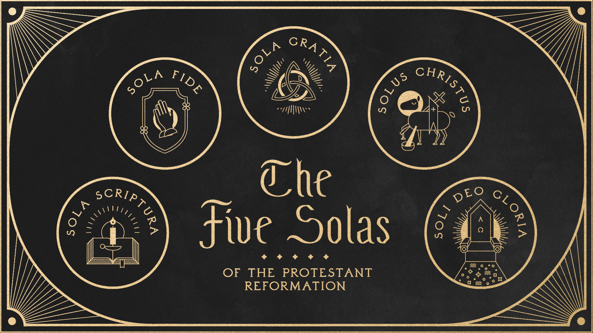

All of these articles are based on the Food For Thought series on our YouTube channel.
The Five Solas of Protestantism • 2 articles
The Protestant Reformation of the 16th century changed Christianity forever. Roused to action by the corruption and abuses they saw in the Roman Catholic church of the time, visionary pastors and leaders like Martin Luther and John Calvin spearheaded a movement that transformed Christianity and eventually led to the emergence of the Protestant denominations that exist today.
Miscellaneous Articles • 2 articles
Miscellaneous articles penned by passionate individuals who love Christ.